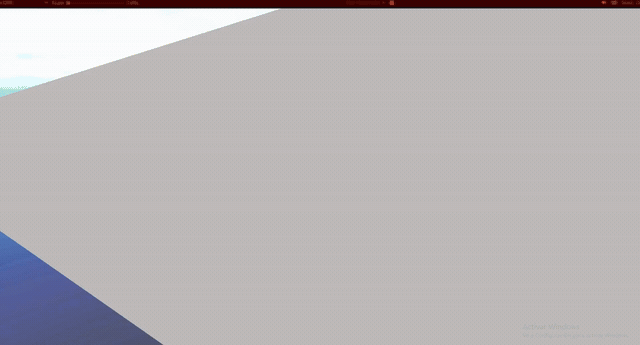

Desarrollo de rampas en Unity
Desarrollo del sistema de rampas procedurales en Unity, trabajando la forma y las proporciones de los obstáculos mediante parámetros editables. Las pruebas en el editor permiten observar cómo cambia la geometría al modificar cada ajuste.
Esta fase sienta las bases de la herramienta que después permite crear y modificar el skatepark dentro de la experiencia de realidad mixta.